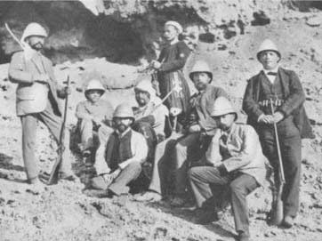
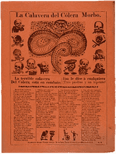
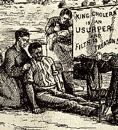
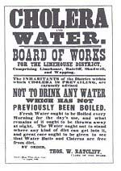

CHOLERA, DIARRHŒA AND DYSENTERY :
HOMŒOPATHIC PREVENTION AND CURE.
by John Henry Clarke, M. D.
Presented by Médi-TPART II. - ENGLISH CHOLERA AND DIARRHŒA.
Chapter V. - Description - Relation to Asiatic Cholera - Symptoms in Adults and Infants - Causes.
While in cold climates and winter weather the chief organs to suffer from atmospheric conditions are those of the chest, in hot climates and in summer the abdominal organs are mainly affected. Many persons naturally, when they take cold, instead of suffering from cold in the head or cough, have diarrhœa ; and in hot weather this is the more common result. Diarrhœa is, in fact, a catarrh of the intestinal mucous membrane, just as an ordinary cold is a catarrh of the mucous membrane of the nose. Children are more especially liable to suffer in this way. Even without any appreciable chill, an intensely high temperature is of itself sufficient to bring about a choleraic condition. All who have had the experience of voyaging through the tropics with very young children are aware of the risks they run in the confined spaces of ship's cabins, or the "tween decks" allotted to emigrants. In large cities a leading item in the summer bill of mortality is the diarrhœa of infants, or "cholera infantum", as it is called ; there are also a considerable number of deaths among adults from "choleraic diarrhœa", "sporadic cholera", "English cholera", or "cholerine", by all of which names the disorder has been called.
Of late years there has been considerable dispute as to whether there is any essential difference between Asiatic or epidemic cholera and the fatal diarrhœa which is always with us in summer time. The dispute is not settled yet. In all probability there is a specific difference, though all attempts to find a single specific germ of Asiatic cholera have hitherto failed ; the so-called "cholera bacillus", the comma bacillus of Koch, not being found in all cases of true cholera, and a bacillus indistinguishable from it in microscopic characters being also found in English cholera.

Robert Koch - Cholera-Expedition - Egypte 1884.A disease answering to the description of cholera has been known from the time of Hippocrates, but there is no record of epidemics of the disease having occurred. It is not known to have spread throughout Hindustan before the year 1817, though it has existed there for centuries. The first invasion of Europe occurred in 1829. It came by way of Persia and Russia, and spread over the greater part of America. In 1845-46 it again visited Europe, reaching America in 1848. In 1853-54 it was exceedingly fatal in Europe, and again in 1866. The word cholera means "bilious", and is the term used by Hippocrates and his contemporaries to designate the choleraic disease known to them, which was probably identical with our own summer diarrhœa, and which they attributed to disorder of the liver.
Whatever the actual relationship between Asiatic cholera and summer diarrhœa may be, extreme cases of the latter are indistinguishable from cases of the former. There is the same sudden collapse of strength, evacuation of great quantities of serous fluid by the stomach and bowels - vomiting and diarrhœa - with shrivelling of the tissues in consequence of the liquid drain ; violent internal pins, cramps in abdominal muscles and in the limbs, with coldness and cold sweat on the forehead.
In children the onset of the symptoms is usually sudden, though there may be indefinite symptoms of illness for a day or two preceding, such as a pinched look about the features and dark circles round the eyes. The first actual symptom of the attack is generally vomiting of unaltered or cheesy milk soon after a meal ; this is generally followed by the passage of some greenish-yellow fluid containing flakes, and often undigested lumps.
There is thirst, restlessness, crying, and drawing up of the legs. The tissues become drained of fluid ; if the openings in the skull have not yet closed they will be found depressed ; and if the progress of the disease is not arrested, twitchings occur in various parts, and finally convulsions and death.
This is a picture of what occurs in typical cases, but there are all varieties and degrees of the complaint short of this extreme, just as in a cholera epidemic there are many persons who have bowel disorder which does not develop into actual cholera. The probability is that these persons are not fully susceptible to the disease, and consequently they only have it in a modified form.
Among the determining causes of an attack of summer diarrhœa a prolonged spell of hot weather must have the first place. Next comes a sudden change from hot to cooler weather, and in the same category may be put any kind of chill or wetting. Close, overcrowded dwellings are a prolific source of the disease among the poor.
Errors in diet are answerable for many cases. A copious draught of cold water when overheated may bring on an attack ; or eating fruit, and especially stone fruit, when not quite ripe, or when over-ripe. Fish, when there is the faintest suspicion of its not being fresh, is a dangerous food, and of all fish mackerel is the most dangerous. Even when fresh, mackerel will induce an attack with many people.

The most potent dietetic cause of summer diarrhœa in infants is artificial feeding, as it is very difficult in hot weather to keep milk from turning sour and keep bottles and tubes free from the germs of putrefaction. Unless special pains are taken about these matters, babies may be poisoned with their food. The practice of giving infants all kinds of ordinary food, "anything that is going", as the people say, must also be mentioned as one of the causes of child's cholera.
The epidemic of influenza - of which we are, as yet, not by any means clear - has been responsible for many cases of diarrhœa, some of them attended with choleraic symptoms.
In the autumn of 1891 I was asked to see a young unmarried lady of very delicate constitution, spare and very active, who in her early years, passed in Australia, had been very subject to diarrhœa, and in whom the tendency had returned during the same year, 1891. She had also had typhoid fever some years before, which had still further tended to weaken the bowels. The occasion of my seeing her was an attack of influenza with failure of strength, depression, headache, fever, yellow tongue, oppression and tenderness at epigastrium, vomiting, increase in size of liver and spleen, with stitches in the spleen, and violent diarrhœa of light watery stools, accompanied with great pain in the back.
Podophyllum 30 in a few hours completely changed the aspect of the case, and after a little further treatment she became better than she had been for months previously.
The same medicine was the chief agent in changing the course of events in another and much more dangerous case of influenza in an elderly lady, who suffered from valvular disease of the heart. She had high fever, diarrhœa and sickness, intense breathlessness and attacks of heart failure. As she was living away from London at the time, an old school practitioner had been called in, and the medicines he gave for the heart had the effect of intensifying ten-fold the gastric symptoms.
At last she could retain nothing in her stomach - neither his medicine nor nourishment. I was written to about her, and sent a few doses of Podophyllum, which stopped the sickness and arrested the diarrhœa. She was able to take nourishment again, and gradually revived. But the convalescence was tedious.

Chapter VI. - Chronic Diarrhœa.
An acute attack of diarrhœa, or of Asiatic cholera, may, if improperly treated, leave behind it a chronic state of looseness of the bowels in those who are predisposed. Sometimes there is a constitutional tendency to looseness, and then a chronic diarrhœa may supervene without any acute attack. In these cases any rapid stopping of the diarrhœa by astringent remedies is attended with no little risk : the diarrhœa may be cured and the patient made worse. With the specific homœopathic remedies the case is different. Their aim is to cure the patient : the diarrhœa will then no longer exist. It not unfrequently happens that asthma and diarrhœa alternate, - that is a patient has asthma when he has not diarrhœa, and diarrhœa when he has not asthma. In such cases, if the homœopathic remedy for the patient is found - probably Arsenicum or Carbo vegetabilis - the patient will be cured, and he will have neither complaint. He has not two diseases, but only one with two different expressions ; and the allopathic method of "curing" the diarrhœa with "astringents", and the asthma with "anti-spasmodics", only keeps the see-saw going. Diarrhœa may be due to defect of any part of the intestinal tract, or of the glands which pour their secretions into it. Liver disease is a frequent cause of diarrhœa.
Here is a case in point. A good many years ago a patient, a gardener, aged about 50, came under my care in the Homœopathic Hospital suffering from recurrent attacks of diarrhœa with violent abdominal pains swelling in the region of the gall-bladder. He had been the round of the various hospitals, both in the county and in London, and had been under the treatment of a well-known practitioner, who had painted him vigorously with iodine, but all without benefit to the patient. For many days he would be in great pain, chiefly in the region of the gall-bladder, where a swelling was to be felt. This generally increased in size until, the pains coming to a climax, he would by seized with an attack of diarrhœa, the stools being mainly composed of matter and blood, and the swelling would disappear for the time. The continued suffering and drain occasioned by this malady had reduced the patient to a shadow of his former self ; and I confess I had not much expectation of doing him great good. However, after trying a number of remedies, I was led by the general symptoms to give him Baptisia in alternation with Phosphorus, and under these two remedies he steadily gained ground, and eventually became perfectly well, and has remained well ever since. He pays me a visit now whenever he comes to town, just to show himself, and tell me how many hours a day he can work, and how many miles (from 14 to 20) he sometimes can walk. I have little doubt that Baptisia had a greater share in the cure than Phosphorus, as I had given him Phosphorus before ; and Baptisia has a very marked action on the gall-bladder.
Many Europeans who have been resident in India are subject to chronic forms of diarrhœa. One form, called adipose diarrhœa, attended with white milky evacuations, is connected with disorder of the pancreas. For this, Iodine is the most important remedy. It may be given in potencies from the 3rd decimal or 3rd centesimal to the 30th.
Chapter VII. - Dietetic and General Management.
 In adults the dietary suitable for an attack of English cholera is the same as that for the Asiatic kind. That is to say, during the first hours nothing but plain water need be given. If there is much collapse it should be given hot but if there is not it must be taken cold. Only small quantities should be given at a time. When the acuteness of the attack is over, milk and soda-water, Whey Koumiss No. 3, or infants' foods may be given until the powers of digestion renew themselves.
All soups and beef-teas should be avoided, as they have a relaxing tendency. The addition of isinglass, however, helps to correct their relaxing properties, and in cases of great exhaustion they may be given with this added. They are better given cold, in the jelly form, one or two teaspoonfuls at a time. All hot drinks excite the action of the bowels. During consequence mutton broth or chicken-tea may be given, and beef-tea when the looseness has entirely passed away. Plain water arrowroot with a teaspoonful of brandy in it has binding properties ; and white of egg beaten up into a froth, and slightly flavoured with lemon and sweetened with a little loaf sugar, is a most excellent form of nourishment in cases of diarrhœa.
In the case of children no definite line of treatment can be laid down. If one kind of food does not suit a particular child, another must be tried. Carnrick's, Mellin's, Allen and Hanburys', Nestlé's, are all good, and may be tired when breast milk or cow's milk is not tolerated. A very useful substitute for breast milk is the Aylesbury Dairy Co.'s Artificial Human Milk, which I have known to agree when all other kinds have failed. But it must not be forgotten that a child will take no harm if it goes without all food for 12 hours or more, and is given only water. In many cases of infant cholera the frequent administration of teaspoonfuls of water is the very best "food" the patient can have, until the signs of irritation have subsided.
Of no less importance than the question of diet is that of air. Plenty of fresh air is an essential requisite. An airy room that is exposed to sunlight during some part of the day is one of the best aids to recovery either of the infant or the adult. If there is great coldness, warmth must be supplied by means of hot bottles and hot flannels. The clothing must be warm but not heavy, and woollen materials are the best. Absolute rest in the recumbent position in necessary in all cases.
Chapter VIII. - Medicines.
The same medicines as are indicated in Asiatic cholera are also called for in summer diarrhœa ; but as in the latter the symptoms are, as a rule, less urgent and violent, so they are more varied, and call for a greater range of medicines are required as in acute when the symptoms correspond, but they must not be repeated so frequently. A dose three or four times a day will be sufficient.
Camphor is still the first medicine to be thought of when, with internal pains, diarrhœa, and vomiting, there are great coldness, great aversion to be covered, blueness of countenance, sudden failure of strength. As soon as the chilliness sets in, two camphor pilules every fifteen minutes will often prevent the attack from developing. If the attack is already pronounced, two drops of Rubini's tincture of camphor on a little sugar every ten to fifteen minutes, with friction of the limbs and hands with camphor spirit.
Veratrum alb. 1. - Violent internal pains, copious watery evacuations, blueness, coldness, cold moisture on forehead. A drop every five to twenty minutes.
Arsenicum 3. - Great anxiety and fear of death, restlessness, thirst, great anguish, internal burning heat with external coldness and desire for warmth, diarrhœa and vomiting after the least food or drink. A drop every five to twenty minutes. Chronic diarrhœa. Diarrhœa alternating with asthma in chilly subjects.
Cuprum 5. - Cramps in the limbs, crampy spasmodic pains in the body, oppression of breathing, vomiting, diarrhœa, restlessness. A drop every five to twenty minutes.
Cuprum arsenicosum 5. - Where the symptoms of Arsenicum and Cuprum appear combined in the same patient.
Carbo vegetabilis 12. - Offensive diarrhœa, great prostration, cold breath, diarrhœa in asthmatics, the patient cannot bear warmth of any kind. Every half-hour till relief is obtained in acute cases ; two or three times a day in chronic ones.
Baptisia 3x. - Diarrhœa with heaviness, pains in limbs, general soreness of the body, typhoid condition. Diarrhœa connected with pain in region of gall-bladder. Every two or three hours.
Bryonia 3. - Diarrhœa aggravated by lest motion, pains in body worse by pressure or motion. Diarrhœa on every spell of hot weather. Every two hours.
Colocynth 3. - Frequent watery stools, brown in colour, accompanied by colicy pains. Patient must bend double to obtain relief. Every two hours, or after each motion.
Podophyllum 3. - Diarrhœa and vomiting. Stool early in morning, light yellow ; great prostration. Prolapse of bowel with stool. Every two or three hours.
Mercurius sol. 6. - Slimy stools containing streaks of blood. Spongy bleeding gums ; bad odour from mouth. Every two or three hours.
Sulph. 6. - Early morning diarrhœa. In patients with eruptive tendency. Sinking at epigastrium worse in the forenoon. Three or four times a day.
IN CHOLERA OF INFANTS the following medicines are most frequently called for :-
Aconite 3. - Watery diarrhœa, crying, complaining, restlessness.
The child bites its fists. When the attack has been brought on by a chill, and is attended by feverishness. Every half-hour till improvement sets in, then less often.
Arsenicum 3. - In the same cases as Acon., when there is great weakness, pallor, emaciation, thirst, white or brownish offensive diarrhœa ; stools rather scanty than copious, worse after midnight or towards morning ; aggravated after eating or drinking. Nothing can be retained in the stomach. Great restlessness, anxious expression.
Apis 3. - Morning diarrhœa ; copious gushing yellow stools ; the child cannot bear to be moved. Brain symptoms threaten.
Æthusa Cynapium 3 will cure a large number of cases in which there is intolerance of milk. Here is a typical case. A short time ago I was asked to see an infant girl. 7 weeks old, suffering from diarrhœa. The history given me was that she had suffered from wind since her birth, and had been crying all the time, more or less, both night and day. An allopathic practitioner who had attended the mother on her confinement had been unable to do anything for the child, and the parents decided to try a change of treatment.
The child was very thin ; nothing would stay in its stomach ; milk was vomited curled almost as soon as taken. The navel was protruded with constant crying, and sore. There was irritating diarrhœa, the stools being light, and the water was strong and offensive. With the attack of diarrhœa there were convulsive movements, and drawing up of the legs. She screamed incessantly every night from 12 to 3 A. M. I prescribed Æthus. c. 3., a drop every two hours, and that night was the first quiet night she had since her birth. There was no more vomiting, and very little diarrhœa. Only three screaming attacks in the 24 hours, and these not severe ones. Subsequently the screaming became rather worse ; the child could not be pacified unless carried, and there was some intertrigo or "chafing", though the vomiting and diarrhœa had not returned. Chamomilla 30 soon completed the cure.
Calcarea carb. 6. - Sour vomiting, sour green stools, great perspiration about the head, cold clammy feet. A dose every hour or two till better.
Silica 6. - For the same condition as Calc. c., except that the stools are green and fetid instead of green and sour. A drop every hour or two.
China 3 (every hour or two). - Diarrhœa occurring after every meal, the stools being fetid, thin, and containing undigested particles.
Helleborus niger 3. - White jelly like stools with tenesmus. Frequent watery stools. Brain symptoms supervene ; twitching of muscles ; sudden relaxation of all muscles, and sinking of strength. Every half-tour till relieved.
Ipec. 3. - At the beginning of an attack where there is nausea, and vomiting of food and drink, or mucus and bile ; thirst. Every half-hour until relieved.
Sulph. 3. Or 30. - Every hour or two when the diarrhœa comes on early in the morning, the stools being thin, watery, and slimy.
Verat. alb. 3. - Prostration, copious vomiting so as almost to cause fainting, great coldness, cold sweat on forehead, copious loose stools, great thirst for cold water, but drinking excites vomiting, as also does the least movement. Every hour till better.
Copyright © Médi-T 2002